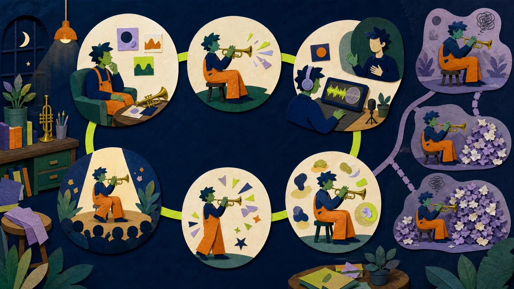
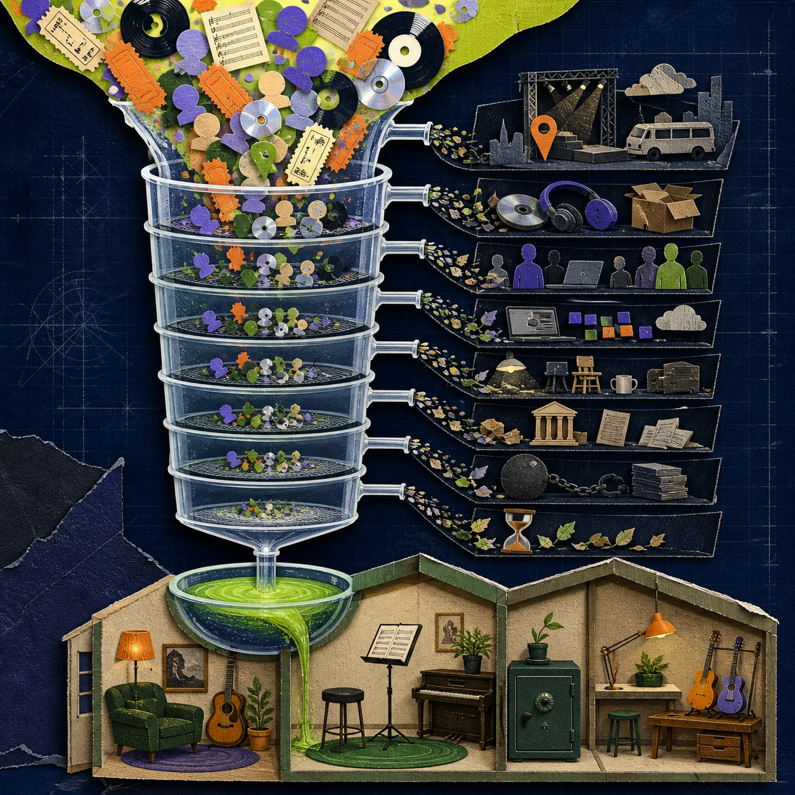
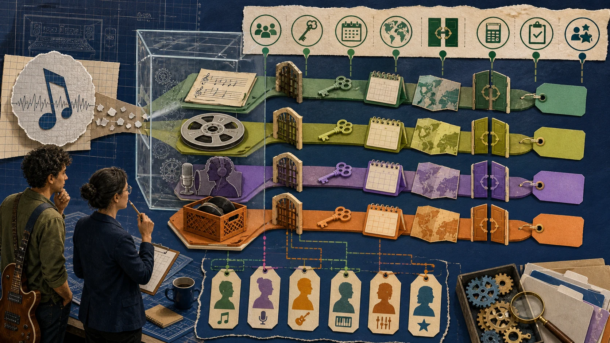

시간 네 칸
투입은 작업실에 있던 시간, 고의적 연습은 약점을 피드백으로 고친 시간, 제작·공연은 가치를 완성한 시간, 회복·행정은 다시 일하고 정산받게 하는 시간입니다.
01 · 먼저 분리
투입은 작업실에 있던 시간, 고의적 연습은 약점을 피드백으로 고친 시간, 제작·공연은 가치를 완성한 시간, 회복·행정은 다시 일하고 정산받게 하는 시간입니다.
총매출, 직접비 뒤 기여이익, 고정비·수수료·세금 뒤 사업 순수입, 생활비 뒤 저축·재투자 가능액은 서로 다릅니다.
장부상 수입이 있어도 90일 뒤 정산이면 오늘 숙박비를 낼 수 없습니다. 손익, 현금흐름, 개인 생활비를 나눠야 합니다.
02 · 시간보다 정보
메타분석에서 의도적 연습은 음악 수행 차이의 약 21%를 설명했습니다. 중요하지만 운명이 아니며, 대부분의 개인차에는 교사·동기·기회·신체·시작 시점과 측정오차가 남습니다. Macnamara et al., 2014

“잘하기” 대신 음정·리듬·발음·운지·음색 중 관찰 가능한 한두 변수를 고릅니다.
고치기 전에 실패 위치와 반복 패턴을 찾습니다.
1–4초 또는 한 동기를 떼어 속도·키·동작을 단순화합니다.
녹음, 교사, 메트로놈 등 목적에 맞는 피드백으로 정확한 행동을 다시 만듭니다.
성공한 조각 앞뒤까지 이어 우연한 한 번을 반복 가능한 문장으로 바꿉니다.
힌트 없이 재현하고 전체 곡, 다른 키, 마이크·관객 속에서 확인합니다.
03 · 매출의 필터

공간, 연주자, 교통, 숙박, 장비, 제작, 포장·배송.
고정비, 팀 수수료, 플랫폼·결제, 보험, 마케팅, 세금.
선급금 상계, 지분, 총액·순액 기준, 정산 주기와 미수금.
공개 장부는 총수입 $135,983, 비용 $147,802, 손실 $11,819였습니다. 한 팀의 한 투어지만 “객석과 매출이 보이면 이익도 있다”는 착각을 깨 줍니다.
전략적 손실도 가능하지만 먼저 손실을 감당할 현금, 후속 회수 가설, 중단 시점을 정해야 합니다. 실제 후속 회수액은 이 장부만으로 알 수 없습니다. 비판적 맥락
04 · 한 줄 수입이 아닌 정원
영국 IPO 조사에서는 녹음 수입이 음악가 전체 수입의 작은 일부였고 라이브와 교육이 주요 수입원이었습니다. 2019년 음악 수입이 £10,000 미만인 응답자가 47%였습니다. 영국·자기보고 표본이라는 한계가 있습니다. Hesmondhalgh et al., 2021
| 바구니 | 예 | 장점 | 위험 |
|---|---|---|---|
| 즉시 노동 | 공연·세션·레슨·제작 | 빠른 현금·관계 | 일을 멈추면 수입도 멈춤 |
| 카탈로그 | 음원·작곡·라이선스 | 재사용·장기 자산 | 느림·불확실·권리 관리 |
| 직접 청중 | 선주문·멤버십·상품 | 가까운 현금·피드백 | 이행·지원·평판 부담 |
| 기관·지원 | 위탁·보조금·레지던시 | 큰 프로젝트 가능 | 경쟁·행정·시기 집중 |
| 비음악 노동 | 직장·다른 프리랜스 | 안정·선택권 | 시간·정체성 갈등 |
각 바구니의 마진입금 속도지급자 집중권리·관계 축적건강 부하를 비교합니다. 무작정 개수를 늘리면 관리 노동만 커집니다.
24,883명의 $1,192,793 약정은 수요와 현금을 앞당겼지만 제작·배송·공연·고객지원 의무도 앞당겼습니다.
총액 ≠ 이익. 기존 공동체와 이행 능력이 필요합니다. Kickstarter
자가 관리, 자체 레이블 발매, 저가·전 연령 정책은 가치와 비용 구조를 묶었습니다.
저가 ≠ 쉬운 모델. 내부화한 행정 노동과 공동체 인프라가 있습니다. Dischord
05 · 돈이 흐르는 길

작곡·가사, 특정 음원, 실연, 이름·초상, 콘텐츠, 고객 데이터는 같은 자산이 아닙니다. 미국 저작권청도 음악저작물과 음원을 별도로 설명합니다. 공식 안내
소유 이전인지 이용허락인지, 기간·지역·매체·독점, 선급금 상계와 정산, 승인, 종료·회복을 표시합니다.
| 계약 질문 | 적어도 확인할 것 |
|---|---|
| 대상 | 작곡·음원·실연·이름·데이터 중 정확히 무엇? |
| 범위 | 소유/라이선스, 기간, 지역, 매체, 독점 |
| 돈 | 총액/순액, 공제 비용, 지분, 상계, 지급 시점 |
| 통제 | 발매·편집·광고·2차 이용 승인 |
| 검증 | 정산 자료·감사·이의 기간·메타데이터 |
| 출구 | 미발매·불이행·종료 뒤 권리 회복 |
06 · 실패해도 다음 시도 남기기
잃어도 생활과 다음 작업을 해치지 않는가?
다음 지출 전에 데모·예약·선주문 증거가 있는가?
비용·기간·건강·관계 중 무엇을 넘으면 멈추나?
결과와 별개로 능력·권리·관계·레퍼토리가 남나?
매몰비용은 계속할 이유가 아닙니다. 중단은 다음 시도와 삶을 보존하는 운영 기술일 수 있습니다.
07 · 월간 제어실
정확도·표현·노력감, 다음 날 보존, 곡·무대 전이.
재방문·답장·재구매와 채널·지역 집중 위험.
매출·마진·순수입·입금, 미수금, 90일 현금.
수면, 통증·청력·목소리, 관계, 다음 작업 의욕.
한 음악 병목을 녹음하고 지난 3개월 돈을 매출·비용·입금일로 분류합니다.
연습 루프 하나와 작은 공연·레슨·세션·선주문 하나를 함께 시험합니다.
실력을 실제 곡·클라이언트로 옮기고 저마진 일을 더할지 줄일지 봅니다.
유지·수정·중단할 것 하나씩, 축적된 능력·관계·권리를 기록합니다.
08 · 근거의 범위
수치·사례의 출처와 더 자세한 실행표는 과학·산업 상세 문서에서, 생성 이미지 프롬프트는 PROMPTS.md에서 확인하세요.